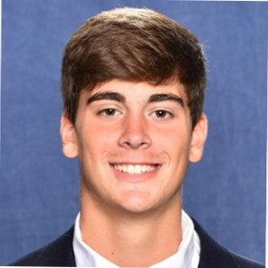

Garrett Bickhart

Summary
As a former collegiate athlete, I have honed my ability to manage a demanding schedule while maintaining a strong work ethic.
This experience, combined with my exceptional communication and interpersonal skills, make me an ideal candidate for a sales
position where I can leverage my competitive
drive to exceed targets and build lasting relationships with clients.
Education
The University of Pittsburgh (Pittsburgh, PA)
Major: Psychology
Certificate: Conceptual Foundations of Medicine
GPA: 3.5/4.0
Dean's List: Fall 2018, Spring & Fall 2020, Spring 2021
Relevant Coursework: Biology 1 and 2 (+lab), Microbiology (+lab), Chemistry 1 and 2 (+lab), Organic Chemistry (+lab),
Anatomy & Physiology 1 and 2 (+lab), Medical Terminology, Morality and Medicine, Drugs and Behavior, Mapping Human Brain Connectivity,
Intro to Clinical Psychology
Work Experience
UPMC Western Psychiatric Hospital - Center for Autism and Developmental Disorders Unit
Student Behavioral Associate (Mar 2021 - Mar 2022)
Milieu Therapist (Mar 2022 - Present)
- Work with healthcare professionals to provide the proper care for patients including vital signs, ADL care, and therapeutic engagements.
Lead groups that strengthen and encourage necessary tools for life outside of the hospital.
- Basic Life Support Certified (American Heart Association) 2021, 2023
Extracurricular
University of Pittsburgh Varsity Football Team
Division I Student-Athlete (Aug 2017 - Dec 2021)
- Managed 40+ hours per week of practice, training, and competition while holding the
responsibility of being a full-time student.
- Earned varsity letter as a walk-on for participating in the majority of competitions for the 2021
ACC championship winning team.
Awards/Honors
National Football Foundation’s Hampshire Honor Society
- Composed of college football players from all divisions of play who each maintained a cumulative 3.2 grade point average or better throughout their college careers.
Athletic Coastal Conference Academic Honor Roll
- Composed of student-athletes who participated in a varsity-level sport and registered a grade point average of 3.0 or better for the full academic year. (Received all four full years of eligibility)